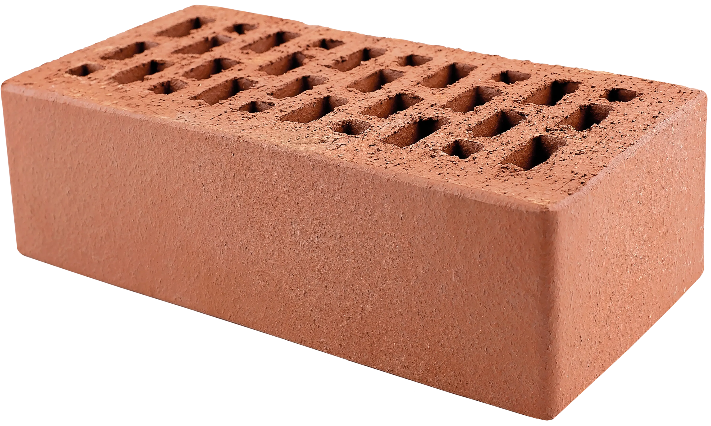
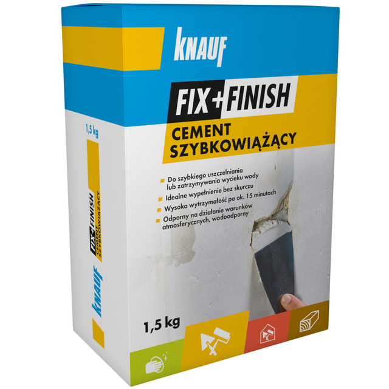
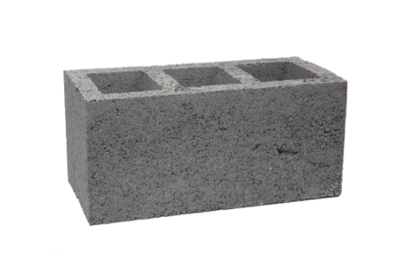

Nasz Asortyment



Wybierz najlepsze materiały budowlane z oferty firmy BUDIMAX. Gwarantujemy trwałość!
Oferujemy szybką dostawę bezpośrednio na plac budowy. Posiadamy kruszywa, cement, stal zbrojeniową, materiały izolacyjne oraz pokrycia dachowe. Nasi eksperci pomogą Ci w optymalnym doborze surowców do Twojego projektu budowlanego.